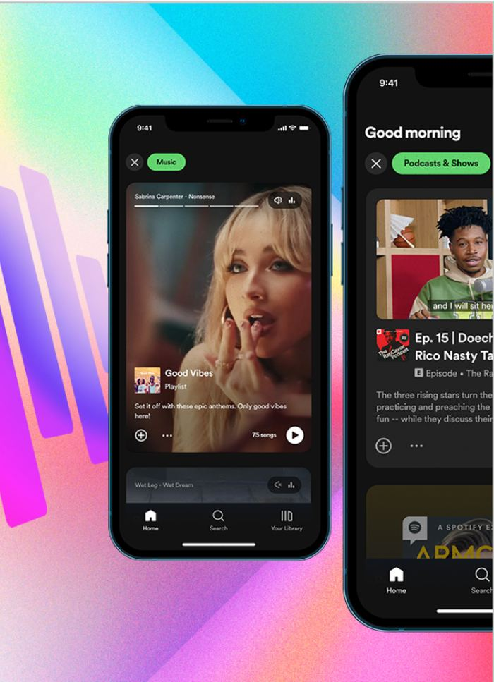

Data Stories
12 interviews reshaped the roadmap
In-depth interviews using each participant’s own real listening data tested desirability and willingness-to-pay for a new paid feature — and reframed it away from quietly competing with a free one.

Situation
Data Stories — a paid feature to surface audio insights, a kind of “sound identity” — needed a reality check: would people love it enough to pay, or was it just Wrapped by another name? One squad owned the bet; Insights had to inform product and leadership on desirability and willingness to pay before the roadmap locked in.
Task
Measure desirability and purchase intent, learn how people interact with Data Stories concepts, which parts appeal, and how novel the idea feels against existing annual-recap experiences.
Approach
Concept and desirability research ran with 12 participants across the US and Australia, in 45–60 minute sessions. Premium users who had engaged with Wrapped-like experiences were recruited, filtered by willingness-to-pay openness and income/tech profile. Stimuli were low-fi screens built from each participant's own real listening data, provided by engineering, with sessions focused on desirability, interaction, and willingness to pay.
Result
Users loved the elements that reflected their eclectic listening and personal obsessions, but daily and weekly stories felt predictable and too close to Wrapped — not worth paying extra for in the tested form. Synthesis set two product goals: durable, highlight-driven insights spanning longer time periods, and a clearly differentiated paid experience. The impact was a stronger product vision and willingness-to-pay point of view for leadership, a roadmap shift toward highlights, new cross-squad collaboration, and a clearer separation from the Wrapped ethos and strategy.
Methodology
Concept testing, willingness-to-pay-oriented interviewing, stimuli built from real behavioral data, and outcomes framed as desirability versus monetization objectives — a clean example of stopping a weak revenue bet before it reached build.
Skills demonstrated: Qualitative synthesis (diary studies, interviews)